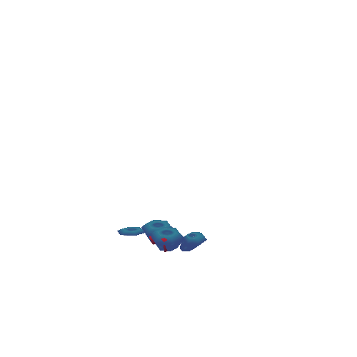

For the sake of efficiency, the pigeons were set up to account for being able to share animations between them.
The animations were further manually tweaked where needed to suit their various body shapes and personalities.
you can click and drag to orbit around the model! please refresh the page if the animation isn't playing


rigging

Experimenting with ways a raindrop could be stylistically animated, this rig was built to be as flexible as possible.


Hey, I'm Charlie! I love making cute, eyecatching 3D assets and breathing life into them with animation.
I'm thoroughly familiar with the entire 3D pipeline and am responsible for all aspects of each piece on display here (except where otherwise specified).
Did I mention I also have a tech art portfolio? You can see some of my rigging, shaders and scripts here :
| Software: | Autodesk Maya, Unity3D, Blender, ZBrush, Adobe suite, 3D-Coat, Substance | |
| Skills: | 3D modelling, UVing/texturing, rigging, skinning, animation, coding (MEL, python, bash, C#, JS) and building tools, batch automation, shaders, VFX, cloth simulation |
Thanks for checking out my portfolio!